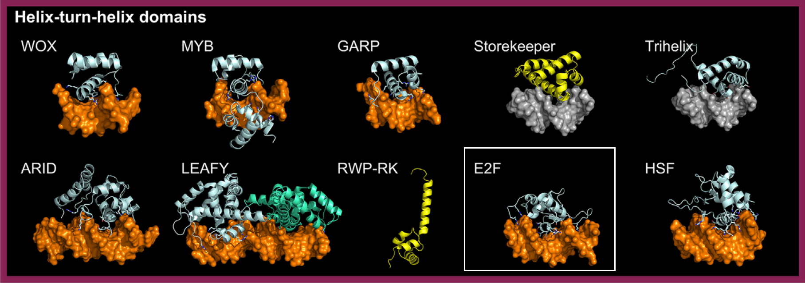

Fork Head (or Winged Helix) factors are characterized by their "winged helix" structure, which includes an HTH motif extended by a "wing" that stabilizes DNA binding. In plants, this class is primarily represented by the E2F family, which regulates cell cycle progression and proliferation [src].
